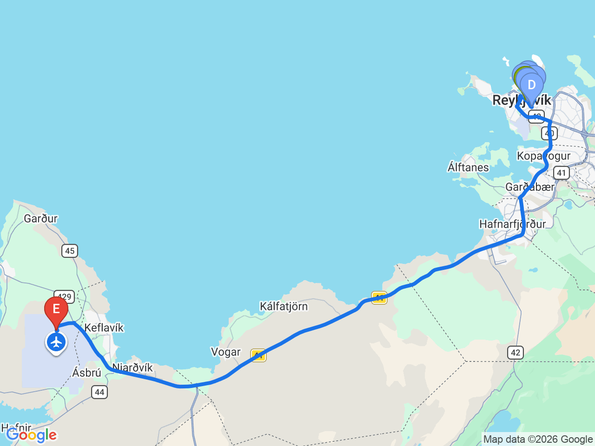

Day 16 · 2026-08-31（一）
冰島環島 Day 11/11
雷克雅維克市區巡禮：哈帕音樂廳・彩虹街・哈爾格林姆教堂
冰島環島最終日，漫遊首都市區地標，傍晚移動至機場旁飯店準備隔天航班

行程明細DAY 16
| 時間 | 地點 | 地點 (英文) | 價格 | 預計停留(分鐘) | 備註 |
|---|---|---|---|---|---|
| 08:30 | 飯店出發 | 市區景點皆可步行串聯 | |||
| 08:40 | 哈帕音樂廳 | AHarpa Concert Hall | 依路邊停車格收費 | 60 | 雷克雅維克最具代表性的地標之一，以蜂巢狀玻璃帷幕聞名，可欣賞港灣景色及現代建築設計，市區為 P1–P4 分區按小時收費（P1 約 630/小時），非單一景點停車費 |
| 09:48 | 太陽航海者 | BSun Voyager | 依路邊停車格收費 | 20 | 不鏽鋼雕塑，象徵維京精神與探索未知，是冰島最受歡迎的拍照景點之一，距離 Harpa 步行約 8 分鐘 |
| 10:25 | 彩虹街 | CRainbow Street (Skólavörðustígur) | 依路邊停車格收費 | 30 | 雷克雅維克最著名的彩虹街道，兩旁聚集特色商店、咖啡館及紀念品店 |
| 11:00 | 哈爾格林姆教堂 | DHallgrímskirkja | 依路邊停車格收費 | 60 | 冰島最高、最具代表性的教堂，可搭乘電梯至塔頂俯瞰整個雷克雅維克市區 |
| 12:10 | 冰島熱狗攤 | FBæjarins Beztu Pylsur, Reykjavik, Iceland | 依路邊停車格收費 | 20 | 冰島最知名的熱狗店，自 1937 年營業，曾獲多位名人造訪，推薦品嚐招牌冰島熱狗 |
| 13:30 | 抵達 Aurora Hotel Keflavík Airport Check-in | 位於凱夫拉維克國際機場旁，距離雷克雅維克約 50 公里，適合隔日搭乘早班機 |
每日三餐
早餐
未安排
午餐
Bæjarins Beztu PylsurBæjarins Beztu Pylsur
📍 Bæjarins Beztu Pylsur, Reykjavik, Iceland冰島最知名的熱狗店，自 1937 年營業
晚餐
未安排
機場附近解決，餐廳尚未確認
住宿資訊
Aurora Hotel Keflavík Airport
📍 Aurora Hotel Keflavík AirportCheck-in15:00
位於凱夫拉維克國際機場旁，距離雷克雅維克約 50 公里，適合隔日搭乘早班機
本日預估開車里程
50km
市區景點皆步行串聯；傍晚開車前往凱夫拉維克機場旁飯店 約50km
該區域加油站
- N1 Reykjanesbær機場周邊加油站，還車前可在此補滿油